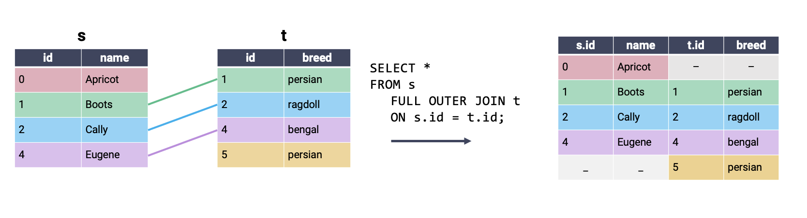
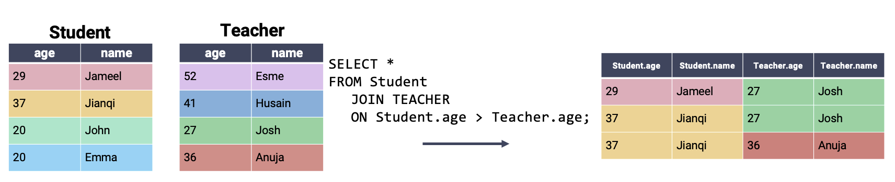

# Load the SQL Alchemy Python library
import sqlalchemy
import pandas as pdSQL II
In this lecture, we’ll continue our work from last time to introduce some advanced SQL syntax.
First, let’s load in the database from last lecture.
%load_ext sqlThe sql extension is already loaded. To reload it, use:
%reload_ext sql%%sql
sqlite:///data/basic_examples.db Filtering Groups
HAVING filters groups by applying some condition across all rows in each group. We interpret it as a a way to keep only the groups HAVING some condition. Note the difference between WHERE and HAVING: we use WHERE to filter rows, whereas we use HAVING to filter groups. WHERE precedes HAVING in terms of how SQL executes a query.
Let’s take a look at the Dish table to see how we can use HAVING.
%%sql
SELECT *
FROM Dish; * sqlite:///data/basic_examples.db
sqlite:///data/imdbmini.db
Done.| name | type | cost |
|---|---|---|
| ravioli | entree | 10 |
| ramen | entree | 13 |
| taco | entree | 7 |
| edamame | appetizer | 4 |
| fries | appetizer | 4 |
| potsticker | appetizer | 4 |
| ice cream | dessert | 5 |
The code below groups the different dishes by type, and only keeps those groups wherein the max cost is still than 8.
%%sql
SELECT type, COUNT(*)
FROM Dish
GROUP BY type
HAVING MAX(cost) < 8; * sqlite:///data/basic_examples.db
sqlite:///data/imdbmini.db
Done.| type | COUNT(*) |
|---|---|
| appetizer | 3 |
| dessert | 1 |
In contrast, the code below first filters for rows where the cost is less than 8, and then does the grouping. Note the difference in outputs - in this case, “taco” is also included, whereas other entries in the same group having cost greater than or equal to 8 are not included.
%%sql
SELECT type, COUNT(*)
FROM Dish
WHERE cost < 8
GROUP BY type; * sqlite:///data/basic_examples.db
sqlite:///data/imdbmini.db
Done.| type | COUNT(*) |
|---|---|
| appetizer | 3 |
| dessert | 1 |
| entree | 1 |
EDA in SQL
In the last lecture, we mostly worked under the assumption that our data had already been cleaned. However, as we saw in our first pass through the data science lifecycle, we’re very unlikely to be given data that is free of formatting issues. With this in mind, we’ll want to learn how to clean and transform data in SQL.
Our typical workflow when working with “big data” is:
- Use SQL to query data from a database
- Use
python(withpandas) to analyze this data in detail
We can, however, still perform simple data cleaning and re-structuring using SQL directly. To do so, we’ll use the Title table from the imdbmini database.
Matching Text using LIKE
One common task we encountered in our first look at EDA was needing to match string data. For example, we might want to remove entries beginning with the same prefix as part of the data cleaning process.
In SQL, we use the LIKE operator to (you guessed it) look for strings that are like a given string pattern.
%%sql
sqlite:///data/imdbmini.db %%sql
SELECT titleType, primaryTitle
FROM Title
WHERE primaryTitle LIKE "Star Wars: Episode I - The Phantom Menace" sqlite:///data/basic_examples.db
* sqlite:///data/imdbmini.db
Done.| titleType | primaryTitle |
|---|---|
| movie | Star Wars: Episode I - The Phantom Menace |
What if we wanted to find all Star Wars movies? % is the wildcard operator, it means “look for any character, any number of times”. This makes it helpful for identifying strings that are similar to our desired pattern, even when we don’t know the full text of what we aim to extract. In contrast, you _ means “look for exactly 1 character”, as you can see in the Harry Potter example that follows.
%%sql
SELECT titleType, primaryTitle
FROM Title
WHERE primaryTitle LIKE "%Star Wars%"
LIMIT 10; sqlite:///data/basic_examples.db
* sqlite:///data/imdbmini.db
Done.| titleType | primaryTitle |
|---|---|
| movie | Star Wars: Episode IV - A New Hope |
| movie | Star Wars: Episode V - The Empire Strikes Back |
| movie | Star Wars: Episode VI - Return of the Jedi |
| movie | Star Wars: Episode I - The Phantom Menace |
| movie | Star Wars: Episode II - Attack of the Clones |
| movie | Star Wars: Episode III - Revenge of the Sith |
| tvSeries | Star Wars: Clone Wars |
| tvSeries | Star Wars: The Clone Wars |
| movie | Star Wars: The Clone Wars |
| movie | Star Wars: Episode VII - The Force Awakens |
%%sql
SELECT titleType, primaryTitle
FROM Title
WHERE primaryTitle LIKE "Harry Potter and the Deathly Hallows: Part _" sqlite:///data/basic_examples.db
* sqlite:///data/imdbmini.db
Done.| titleType | primaryTitle |
|---|---|
| movie | Harry Potter and the Deathly Hallows: Part 1 |
| movie | Harry Potter and the Deathly Hallows: Part 2 |
CASTing Data Types
A common data cleaning task is converting data to the correct variable type. The CAST keyword is used to generate a new output column. Each entry in this output column is the result of converting the data in an existing column to a new data type. For example, we may wish to convert numeric data stored as a string to an integer.
%%sql
SELECT primaryTitle, CAST(runtimeMinutes AS INT), CAST(startYear AS INT)
FROM Title
LIMIT 5 sqlite:///data/basic_examples.db
* sqlite:///data/imdbmini.db
Done.| primaryTitle | CAST(runtimeMinutes AS INT) | CAST(startYear AS INT) |
|---|---|---|
| A Trip to the Moon | 13 | 1902 |
| The Birth of a Nation | 195 | 1915 |
| The Cabinet of Dr. Caligari | 76 | 1920 |
| The Kid | 68 | 1921 |
| Nosferatu | 94 | 1922 |
We use CAST when SELECTing colunns for our output table. In the example above, we want to SELECT the columns of integer year and runtime data that is created by the CAST.
SQL will automatically name a new column according to the command used to SELECT it, which can lead to unwieldy column names. We can rename the CASTed column using the AS keyword.
%%sql
SELECT primaryTitle AS title, CAST(runtimeMinutes AS INT) AS minutes, CAST(startYear AS INT) AS year
FROM Title
LIMIT 5; sqlite:///data/basic_examples.db
* sqlite:///data/imdbmini.db
Done.| title | minutes | year |
|---|---|---|
| A Trip to the Moon | 13 | 1902 |
| The Birth of a Nation | 195 | 1915 |
| The Cabinet of Dr. Caligari | 76 | 1920 |
| The Kid | 68 | 1921 |
| Nosferatu | 94 | 1922 |
Using Conditional Statements with CASE
When working with pandas, we often ran into situations where we wanted to generate new columns using some form of conditional statement. For example, say we wanted to describe a film title as “old,” “mid-aged,” or “new,” depending on the year of its release.
In SQL, conditional operations are performed using a CASE clause. Conceptually, CASE behaves much like the CAST operation: it creates a new column that we can then SELECT to appear in the output. The syntax for a CASE clause is as follows:
CASE WHEN <condition> THEN <value>
WHEN <other condition> THEN <other value>
...
ELSE <yet another value>
ENDScanning through the skeleton code above, you can see that the logic is similar to that of an if statement in python. The conditional statement is first opened by calling CASE. Each new condition is specified by WHEN, with THEN indicating what value should be filled if the condition is met. ELSE specifies the value that should be filled if no other conditions are met. Lastly, END indicates the end of the conditional statement; once END has been called, SQL will continue evaluating the query as usual.
Let’s see this in action. In the example below, we give the new column created by the CASE statement the name movie_age.
%%sql
/* If a movie was filmed before 1950, it is "old"
Otherwise, if a movie was filmed before 2000, it is "mid-aged"
Else, a movie is "new" */
SELECT titleType, startYear,
CASE WHEN startYear < 1950 THEN "old"
WHEN startYear < 2000 THEN "mid-aged"
ELSE "new"
END AS movie_age
FROM Title
LIMIT 10; sqlite:///data/basic_examples.db
* sqlite:///data/imdbmini.db
Done.| titleType | startYear | movie_age |
|---|---|---|
| short | 1902 | old |
| movie | 1915 | old |
| movie | 1920 | old |
| movie | 1921 | old |
| movie | 1922 | old |
| movie | 1924 | old |
| movie | 1925 | old |
| movie | 1925 | old |
| movie | 1927 | old |
| movie | 1926 | old |
JOINing Tables
At this point, we’re well-versed in using SQL as a tool to clean, manipulate, and transform data in a table. Notice that this sentence referred to one table, specifically. What happens if the data we need is distributed across multiple tables? This is an important consideration when using SQL – recall that we first introduced SQL as a language to query from databases. Databases often store data in a multidimensional structure. In other words, information is stored across several tables, with each table containing a small subset of all the data housed by the database.
A common way of organizing a database is by using a star schema. A star schema is composed of two types of tables. A fact table is the central table of the database – it contains the information needed to link entries across several dimension tables, which contain more detailed information about the data.
Say we were working with a database about boba offerings in Berkeley. The dimension tables of the database might contain information about tea varieties and boba toppings. The fact table would be used to link this information across the various dimension tables.
If we explicitly mark the relationships between tables, we start to see the star-like structure of the star schema.

To join data across multiple tables, we’ll use the (creatively named) JOIN keyword. We’ll make things easier for now by first considering the simpler cats dataset, which consists of the tables s and t.

To perform a join, we amend the FROM clause. You can think of this as saying, “SELECT my data FROM tables that have been JOINed together.”
Remember: SQL does not consider newlines or whitespace when interpreting queries. The indentation given in the example below is to help improve readability. If you wish, you can write code that does not follow this formatting.
SELECT <column list>
FROM table_1
JOIN table_2
ON key_1 = key_2;We also need to specify what column from each table should be used to determine matching entries. By defining these keys, we provide SQL with the information it needs to pair rows of data together.
In a cross join, all possible combinations of rows appear in the output table, regardless of whether or not rows share a matching key. Because all rows are joined, even if there is no matching key, it is not necessary to specify what keys to consider in an ON statement. A cross join is also known as a cartesian product.

The most commonly used type of SQL JOIN is the inner join. It turns out you’re already familiar with what an inner join does, and how it works – this is the type of join we’ve been using in pandas all along! In an inner join, we combine every row in our first table with its matching entry in the second table. If a row from either table does not have a match in the other table, it is omitted from the output.

Another way of interpreting the inner join: perform a cross join, then remove all rows that do not share a matching key. Notice that the output of the inner join above contains all rows of the cross join example that contain a single color across the entire row.
In a full outer join, all rows that have a match between the two tables are joined together. If a row has no match in the second table, then the values of the columns for that second table are filled with null. In other words, a full outer join performs an inner join while still keeping rows that have no match in the other table. This is best understood visually:

We have kept the same output achieved using an inner join, with the addition of partially-null rows for entries in s and t that had no match in the second table. Note that FULL OUTER JOIN is not supported by SQLite, the “flavor” of SQL that will be used in lab and homework.
A left outer join is similar to a full outer join. In a left outer join, all rows in the left table are kept in the output table. If a row in the right table shares a match with the left table, this row will be kept; otherwise, the rows in the right table are omitted from the output.

A right outer join keeps all rows in the right table. Rows in the left table are only kept if they share a match in the right table. Right outer joins are not supported by SQLite.

In the examples above, we performed our joins by checking for equality between the two tables (i.e., by setting s.id = t.id). SQL also supports joining rows on inequalities, which is something we weren’t able to do when working in pandas. Consider a new dataset that contains information about students and teachers.

Often, we wish to compare the relative values of rows in different tables, rather than check that they are exactly equal. For example, we may want to join rows where students are older than the corresponding teacher. We can do so by specifying an inequality in our ON statement.
